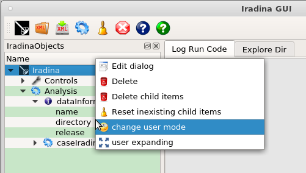
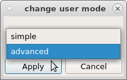

Add an Item in this FAQ¶
Edit iradinaGUI/doc/src/FAQ.rst and read documentation Doc compilation Linux.
FAQ¶
Why there is NOT all options of Iradina code in IradinaObjects tree ?¶
Default user mode is set to simple, for beginners use.
Select action change user mode in contextual menu of Iradina node of tree (which is first line/node of tree).

Then Apply as advanced.

User can edit/modify value General.usermode parameter in the IradinaGUI configuration, to get a permanent setting.
Next question ?¶
Here there is your next answer etc.